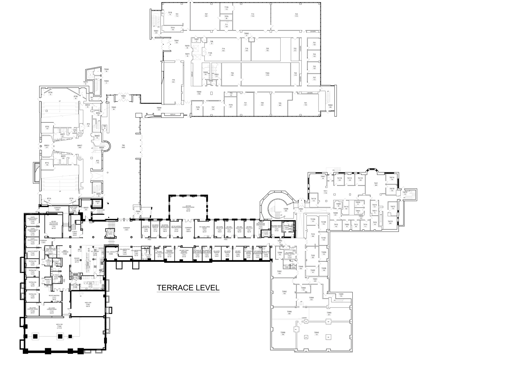
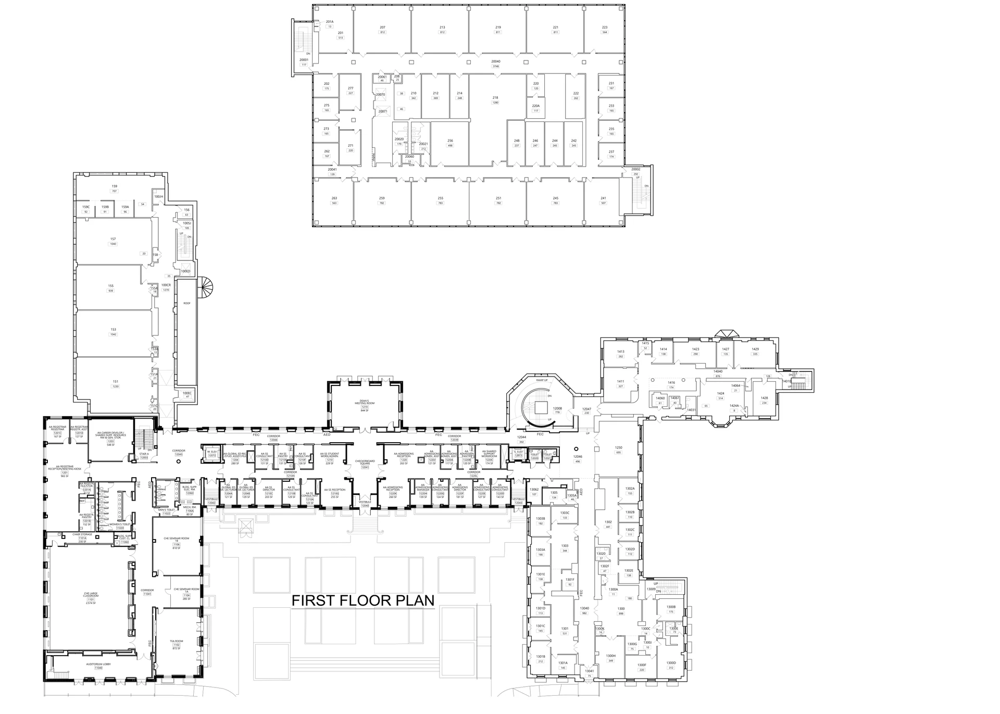
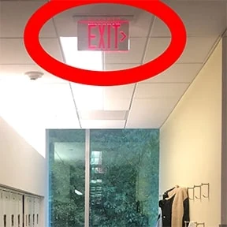
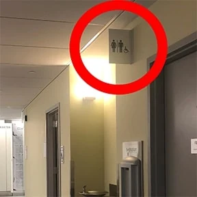

Research software prototype · Unpublished manuscript
WayFindA Behavioral Mapping Tool for Real-World Wayfinding Trajectories and Experiences
Research at Cornell’s Design and Augmented Intelligence Lab · 2022–2024

Overview
Connecting where people move with what happens along the way.
WayFind is a Python research prototype for observing navigation in real buildings. Its floor-plan interface lets a researcher record positions, change floors, and annotate task events and behaviors. Timestamped joystick input adds a continuous channel for recording uncertainty alongside a trajectory session.
The project supports research instrumentation and spatial visualization: connecting the route through a building with decision points, task context, and experience during navigation.
Observation workflow
Record movement
An observer clicks or taps positions on a floor plan and changes the active floor as the route progresses.
Annotate experience
Configurable markers record tasks and behaviors; a joystick records timestamped deflection and magnitude.
Explore spatial patterns
Task and floor selections support point-count and uncertainty visualizations.
The prototype includes session controls, survey popups, undo and redo, and periodic autosave. CSV records preserve local datetime, UNIX timestamps, floor identifiers, event markers, and relative X/Y positions.
Artifacts from the prototype



My contribution
I built data collection and visualization tools for indoor wayfinding research, including interfaces for recording trajectories and spatial decision points and analysis tools for navigation behavior. At Cornell’s Design and Augmented Intelligence Lab, advised by Saleh Kalantari, I also supported experiment design, participant coordination, and manuscript preparation.
- Floor-plan-based trajectory and event logging across multiple levels.
- Timestamped data collection connecting task markers and continuous uncertainty input.
- Spatial visualization and data-processing tools for examining observation sessions.
Project status
WayFind is a research software prototype with an unpublished manuscript. This page documents its collection workflow, implementation, and original project artifacts.
The images show floor-plan underlays and landmark references. Participant results and tracking-accuracy benchmarks are not presented here.